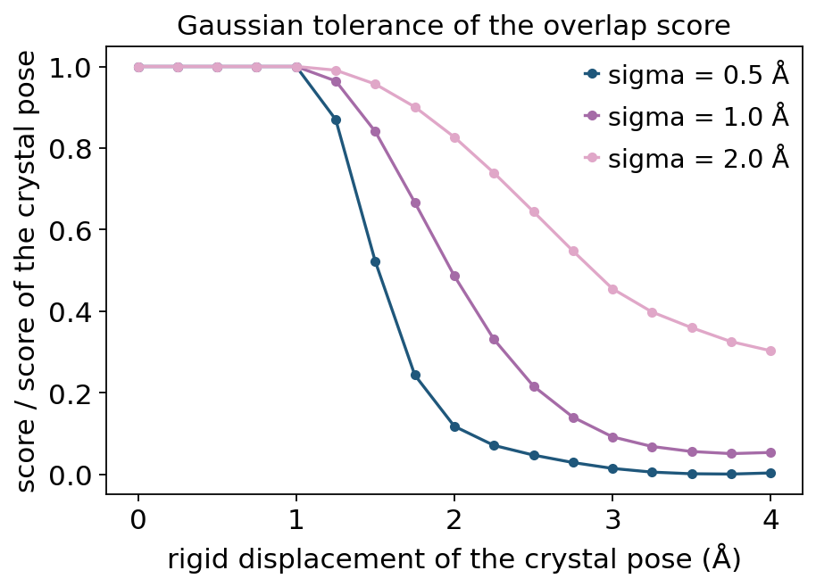

Receptor-free pose generation against a pharmacophore#
A pharmacophore model is a set of interaction volumes — spheres in space, each tagged with a feature family (hydrogen-bond donor, acceptor, hydrophobe, aromatic ring) — usually together with a set of excluded volumes marking where the receptor already is. It is the oldest and still the most portable way to write down “what a ligand has to do here”: it survives the loss of the receptor structure, it can be derived from a series of known actives alone, and it is how published models are exchanged between groups.
What a model deliberately does not say is which ligand atom should
reach which sphere. Finding that correspondence, and finding a conformer
that satisfies several spheres at once without pushing into the receptor, is
the alignment problem that ov.mol’s pharmacophore layer solves:
function |
what it does |
|---|---|
|
feature points of a conformer, per family |
|
Gaussian-tolerance overlap of a pose with a model |
|
force-field energy of a pose, heavy atoms frozen |
|
one ligand → a pose satisfying the model ( |
|
many ligands → one record each, optionally an SDF |
This is the receptor-free counterpart of ov.mol.dock: no grid, no
empirical scoring function fitted on complexes, only geometry. Use it when
the receptor structure is unknown, low quality, or the binding site is not resolved — but a ligand-based model from known actives exists;
a published pharmacophore has to be reproduced or applied to new chemistry;
a pose has to be transferred from one complex to a related apo or mutant structure;
you want a fast, interpretable geometric filter in front of a docking run.
The method in five steps#
Conformer ensemble — ETKDG embedding plus a force-field minimisation of every conformer. The pose is then placed as a rigid body, so its internal geometry stays at a relaxed minimum. That is deliberate: twisting torsions buys overlap cheaply and pays for it in strain.
Feature points — RDKit’s feature factory gives donors, acceptors, hydrophobes and aromatic rings (an aromatic feature is its ring centroid).
Anchor correspondence — a few well-separated, heavily weighted volumes are chosen as anchors; candidate ligand feature atoms of the matching family are enumerated, pruned by topological and intramolecular-distance feasibility, and every surviving tuple is Kabsch-superposed onto the anchor centres.
Rigid refinement — the best seeds are improved by a shrinking random rotation/translation hill-climb on overlap minus a soft excluded-volume penalty, with re-anchoring on the largest residuals.
Selection — overlap first, inside a strain budget calibrated on the ligand’s own relaxed ensemble: among poses within a tolerance of the best overlap, the least strained one is returned.
In this tutorial we build a model from a real co-crystal structure
(EGFR + erlotinib, PDB 1M17), check the scoring and strain functions
against that known answer, and then throw the crystal pose away and ask
pharmacophore_align to rebuild it from the SMILES string alone — a
redocking-style test with a ground truth we can measure against.
import urllib.request
import numpy as np
import pandas as pd
import matplotlib.pyplot as plt
from mpl_toolkits.mplot3d.art3d import Line3DCollection
from scipy.spatial import cKDTree
import omicverse as ov
from rdkit import Chem
from rdkit.Chem import AllChem, rdMolAlign
ov.plot_set()
🔬 Starting plot initialization...
🧬 Detecting GPU devices…
🚫 No GPU devices found (CUDA/MPS/ROCm/XPU)
____ _ _ __
/ __ \____ ___ (_)___| | / /__ _____________
/ / / / __ `__ \/ / ___/ | / / _ \/ ___/ ___/ _ \
/ /_/ / / / / / / / /__ | |/ / __/ / (__ ) __/
\____/_/ /_/ /_/_/\___/ |___/\___/_/ /____/\___/
🔖 Version: 2.3.2 📚 Tutorials: https://omicverse.readthedocs.io/
✅ plot_set complete.
1. A real complex to learn from: EGFR + erlotinib (PDB 1M17)#
1M17 is the 2.6 Å structure of the EGFR kinase domain with erlotinib
(ligand code AQ4) bound in the ATP site (Stamos, Sliwkowski & Eigenbrot,
J. Biol. Chem. 2002). We download the entry from RCSB and split it into
the ligand — 29 heavy atoms, whose crystallographic coordinates are the ground truth we will later try to reproduce;
the receptor heavy atoms, which will become excluded volumes.
A PDB file carries no bond orders, so the ligand’s chemistry is restored by
matching it against erlotinib’s SMILES with
AllChem.AssignBondOrdersFromTemplate — the standard way to turn deposited
HETATM records into a chemically correct RDKit molecule.
ERLOTINIB = "C#Cc1cccc(Nc2ncnc3cc(OCCOC)c(OCCOC)cc23)c1"
pdb_text = urllib.request.urlopen(
"https://files.rcsb.org/download/1M17.pdb", timeout=120).read().decode()
lig_lines = [l for l in pdb_text.splitlines()
if l.startswith("HETATM") and l[17:20].strip() == "AQ4"]
prot_lines = [l for l in pdb_text.splitlines()
if l.startswith("ATOM") and l[76:78].strip() != "H"]
def _xyz(lines):
return np.array([[float(l[30 + 8 * i:38 + 8 * i]) for i in range(3)] for l in lines])
prot_xyz = _xyz(prot_lines)
prot_elem = np.array([l[76:78].strip() for l in prot_lines])
prot_label = np.array([f"{l[17:20].strip()}{l[22:26].strip()}:{l[12:16].strip()}"
for l in prot_lines])
xtal = AllChem.AssignBondOrdersFromTemplate(
Chem.MolFromSmiles(ERLOTINIB),
Chem.MolFromPDBBlock("\n".join(lig_lines) + "\nEND\n", removeHs=False))
print("receptor heavy atoms :", len(prot_lines))
print("ligand heavy atoms :", xtal.GetNumAtoms())
print("ligand SMILES (read back from the crystal):", Chem.MolToSmiles(xtal))
print("matches the reference:",
Chem.MolToSmiles(xtal) == Chem.MolToSmiles(Chem.MolFromSmiles(ERLOTINIB)))
receptor heavy atoms : 2511
ligand heavy atoms : 29
ligand SMILES (read back from the crystal): C#Cc1cccc(Nc2ncnc3cc(OCCOC)c(OCCOC)cc23)c1
matches the reference: True
The SMILES read back from the deposited coordinates is identical to the reference, so the template assignment succeeded: aromaticity, the alkyne and both ether chains are correct. Everything below is derived from these coordinates — no stored constants, no task-specific files.
2. pharmacophore_features — what the ligand offers#
Feature extraction is the first thing to look at, because a model can only
ask for families the chemistry can provide. pharmacophore_features
returns one array of 3D points per family for a given conformer; aromatic
features are ring centroids, and hydrophobe_fallback=True (the default)
falls back to carbon/sulfur atoms for molecules whose feature definitions
yield no hydrophobe at all.
To see which of those features are actually doing something in this complex, we measure, for each feature point, the distance to the nearest receptor atom — polar (N/O) for donors and acceptors, any heavy atom for hydrophobes and aromatics.
feats = ov.mol.pharmacophore_features(xtal)
polar_mask = np.isin(prot_elem, ["N", "O"])
polar_idx = np.where(polar_mask)[0]
tree_polar = cKDTree(prot_xyz[polar_mask])
tree_all = cKDTree(prot_xyz)
rows = []
for family, points in feats.items():
for point in points:
if family in ("Donor", "Acceptor"):
dist, j = tree_polar.query(point)
partner = prot_label[polar_idx[j]]
else:
dist, j = tree_all.query(point)
partner = prot_label[j]
rows.append({"family": family,
"x": point[0], "y": point[1], "z": point[2],
"nearest_receptor_atom": partner,
"distance_A": dist,
"contacts_within_5A": len(tree_all.query_ball_point(point, 5.0))})
feature_table = pd.DataFrame(rows).sort_values(["family", "distance_A"]).reset_index(drop=True)
feature_table.round(2)
family x y z nearest_receptor_atom distance_A \
0 Acceptor 21.75 -2.04 55.32 MET769:N 2.70
1 Acceptor 15.11 0.17 53.34 PRO770:O 3.21
2 Acceptor 18.99 2.48 48.54 LEU694:O 3.27
3 Acceptor 17.83 -0.68 52.60 GLY772:N 3.97
4 Acceptor 23.94 -1.02 54.94 GLN767:O 4.06
5 Acceptor 19.59 1.22 51.12 LEU694:O 4.71
6 Aromatic 20.67 -0.42 53.24 LEU694:CD1 3.68
7 Aromatic 22.58 -1.12 54.61 ALA719:CB 3.74
8 Aromatic 27.11 1.19 53.30 THR830:OG1 4.07
9 Donor 24.29 0.71 53.22 ASP831:OD2 5.43
10 Hydrophobe 28.84 -1.02 53.43 THR766:OG1 3.53
11 Hydrophobe 27.99 0.09 53.37 LYS721:CD 3.84
12 Hydrophobe 22.04 -0.31 53.57 LEU820:CD1 4.16
contacts_within_5A
0 19
1 9
2 5
3 10
4 8
5 5
6 7
7 15
8 7
9 6
10 13
11 9
12 8
Read the table as chemistry, not as numbers:
one acceptor sits 2.7 Å from the backbone N of Met769 — that is the textbook hinge hydrogen bond of 4-anilinoquinazoline EGFR inhibitors, made by the quinazoline N1;
two more acceptors (the ether oxygens of the solubilising side chains) are 3.2–3.3 Å from backbone oxygens at the solvent-exposed mouth of the site;
the single donor (the aniline NH) has no polar partner within 5 Å — it points at the hydrophobic back pocket, so a model built from contacts must not ask for it;
aromatic centroids and hydrophobes are buried, with 6–20 receptor atoms within 5 Å.
This is exactly the information a pharmacophore model should encode. Note that the feature extraction itself knows nothing about EGFR: it is RDKit’s generic definition file, and the biology enters only through the distances.
FAMILY_COLORS = {"Donor": "#4C72B0", "Acceptor": "#C44E52",
"Hydrophobe": "#55A868", "Aromatic": "#8172B3"}
# All 3D figures are drawn in the ligand's own principal-axis frame, so the
# long axis of the molecule lies along the first plotted axis and the thin
# direction is the third — a flat, readable projection of an elongated ligand.
_ref_xyz = xtal.GetConformer().GetPositions()
_origin = _ref_xyz.mean(axis=0)
_basis = np.linalg.svd(_ref_xyz - _origin, full_matrices=False)[2]
def frame(points):
"""World coordinates (Å) -> the ligand's principal-axis frame (Å)."""
return (np.asarray(points) - _origin) @ _basis.T
def draw_skeleton(ax, mol, color="0.35", lw=1.8, conf_id=-1):
"""Bonds of a conformer as 3D line segments, in the principal frame."""
pos = frame(mol.GetConformer(conf_id).GetPositions())
segs = [[pos[b.GetBeginAtomIdx()], pos[b.GetEndAtomIdx()]] for b in mol.GetBonds()]
ax.add_collection3d(Line3DCollection(segs, colors=color, linewidths=lw))
return pos
def set_scale(ax, pts, pad=1.2, elev=26, azim=-68):
lo, hi = np.min(pts, axis=0) - pad, np.max(pts, axis=0) + pad
ax.set_xlim(lo[0], hi[0]); ax.set_ylim(lo[1], hi[1]); ax.set_zlim(lo[2], hi[2])
ax.set_box_aspect(hi - lo) # true to scale, not a forced cube
ax.view_init(elev=elev, azim=azim)
ax.set(xlabel="axis 1 (Å)", ylabel="axis 2 (Å)", zlabel="axis 3 (Å)")
fig = plt.figure(figsize=(7.2, 5.2), constrained_layout=True)
ax = fig.add_subplot(111, projection="3d")
pos = draw_skeleton(ax, xtal)
for family, points in feats.items():
ax.scatter(*frame(points).T, s=90, alpha=0.9, label=f"{family} ({len(points)})",
color=FAMILY_COLORS[family], depthshade=False)
set_scale(ax, pos)
ax.set_title("Erlotinib in 1M17: feature points per family")
ax.legend(loc="upper left", fontsize=8, frameon=False)
plt.show()

The crystal conformer is the familiar L shape: the quinazoline core in the middle (two aromatic centroids), the 3-ethynylphenyl group reaching into the back pocket (hydrophobe, far left), and the two methoxyethoxy arms (acceptor points) trailing towards the solvent.
3. From contacts to a model: interaction and excluded volumes#
A volume is a plain dictionary — family, center, radius, and an
optional weight:
{"family": "Acceptor", "center": [21.7, -2.0, 55.3], "radius": 1.0, "weight": 2.0}
We build the model from the measured contacts rather than by picking atoms by hand:
a donor/acceptor feature with a polar receptor partner within 3.5 Å becomes an H-bond volume (radius 1.0 Å, weight 2.0 — H-bonds are directional and expensive to lose);
an aromatic or hydrophobic feature with at least 6 receptor atoms within 5 Å becomes a shape volume (radius 1.2 Å, weight 1.0 / 0.5).
The excluded volumes are the receptor heavy atoms within 8 Å of the ligand, each a 1.9 Å sphere — roughly a heavy-atom van der Waals radius, so “outside every sphere” means “not interpenetrating the protein”.
weight matters twice: it sets what a volume contributes to the score, and
the search prefers heavily weighted, well-separated volumes as anchors.
HBOND_CUTOFF, BURIAL_CUTOFF = 3.5, 6
volumes = []
for family, points in feats.items():
for point in points:
if family in ("Donor", "Acceptor"):
if tree_polar.query(point)[0] <= HBOND_CUTOFF:
volumes.append({"family": family, "center": point.tolist(),
"radius": 1.0, "weight": 2.0})
elif len(tree_all.query_ball_point(point, 5.0)) >= BURIAL_CUTOFF:
volumes.append({"family": family, "center": point.tolist(),
"radius": 1.2,
"weight": 1.0 if family == "Aromatic" else 0.5})
xtal_xyz = xtal.GetConformer().GetPositions()
site_idx = np.unique(np.concatenate(
[tree_all.query_ball_point(p, 8.0) for p in xtal_xyz]))
excluded = [{"center": prot_xyz[i].tolist(), "radius": 1.9} for i in site_idx]
model = pd.DataFrame(volumes)
model["center"] = model["center"].apply(lambda c: np.round(c, 2).tolist())
print(f"{len(volumes)} interaction volumes, max_score = "
f"{sum(v['weight'] for v in volumes):.1f}; {len(excluded)} excluded volumes")
model
9 interaction volumes, max_score = 10.5; 243 excluded volumes
family center radius weight
0 Acceptor [18.99, 2.48, 48.54] 1.0 2.0
1 Acceptor [15.11, 0.17, 53.34] 1.0 2.0
2 Acceptor [21.75, -2.04, 55.32] 1.0 2.0
3 Hydrophobe [27.99, 0.09, 53.37] 1.2 0.5
4 Hydrophobe [22.04, -0.31, 53.57] 1.2 0.5
5 Hydrophobe [28.84, -1.02, 53.43] 1.2 0.5
6 Aromatic [27.11, 1.19, 53.3] 1.2 1.0
7 Aromatic [22.58, -1.12, 54.61] 1.2 1.0
8 Aromatic [20.67, -0.42, 53.24] 1.2 1.0
Nine interaction volumes with a total weight of 10.5: three acceptors
(weight 2.0 each), three aromatics (1.0) and three hydrophobes (0.5). That
total is the max_score every pose is measured against — the score of a
hypothetical pose that reaches every sphere.
243 excluded spheres is a realistic site: the penalty they impose is what keeps a geometrically perfect pose from being an impossible one.
4. pharmacophore_score — a tolerance, not a yes/no#
The overlap score is Gaussian-tolerant: a feature inside its sphere earns
the full weight, and outside it the contribution decays with a width sigma
(in Å) — at sigma beyond the sphere surface it is down to 1/e. The
crystal pose must score the maximum here by construction (the spheres were
placed on its own feature points), which is precisely what makes it a usable
check: it tells us the scorer and the model agree.
To see what the tolerance means, we translate the crystal pose rigidly away
from the site and rescore it at three values of sigma.
score_xtal, per_volume = ov.mol.pharmacophore_score(xtal, volumes, per_volume=True)
print(f"crystal pose: score = {score_xtal:.3f} / {sum(v['weight'] for v in volumes):.1f}")
print("per-volume contributions:", np.round(per_volume, 3))
direction = np.array([1.0, 0.0, 0.0])
shifts = np.linspace(0, 4, 17)
curves = {}
for sigma in (0.5, 1.0, 2.0):
vals = []
for shift in shifts:
moved = Chem.Mol(xtal)
conf = moved.GetConformer()
for i, p in enumerate(xtal_xyz + shift * direction):
conf.SetAtomPosition(i, p.tolist())
vals.append(ov.mol.pharmacophore_score(moved, volumes, sigma=sigma))
curves[sigma] = np.array(vals)
fig, ax = plt.subplots(figsize=(5.6, 4.0), constrained_layout=True)
for sigma, vals in curves.items():
ax.plot(shifts, vals / score_xtal, "o-", ms=4, label=f"sigma = {sigma} Å")
ax.set(xlabel="rigid displacement of the crystal pose (Å)",
ylabel="score / score of the crystal pose",
title="Gaussian tolerance of the overlap score")
ax.legend(frameon=False)
plt.show()
crystal pose: score = 10.500 / 10.5
per-volume contributions: [2. 2. 2. 0.5 0.5 0.5 1. 1. 1. ]


Every per-volume contribution of the crystal pose equals its weight, so the score is the full 10.5 — the sanity check passes.
The displacement curve shows what sigma actually controls. A 1 Å shift
already costs 40–60 % of the score; by 2 Å a tight model (sigma = 0.5) has
nothing left, while a loose one (sigma = 2.0) still awards a third of the
maximum. Pass the sigma of the model you are reproducing: a published
model’s thresholds are only meaningful with the tolerance it was fitted
with, and a too-generous sigma turns the model into a vague shape filter
that ranks decoys above actives.
5. pose_strain_energy — is the pose physically plausible?#
Overlap alone is a trap: a sufficiently distorted conformer can reach almost
any set of spheres. pose_strain_energy measures the MMFF94s energy of a
pose with the heavy atoms frozen and only the hydrogens relaxed — which
is exactly what a plausibility check on a stored pose sees, since an SDF
usually comes back without meaningful hydrogen positions.
The number is only interpretable against a reference, so we compare the crystal pose with the ligand’s own relaxed conformers.
strain_xtal = ov.mol.pose_strain_energy(xtal)
ens = Chem.AddHs(Chem.MolFromSmiles(ERLOTINIB))
params = AllChem.ETKDGv3()
params.randomSeed = 0
AllChem.EmbedMultipleConfs(ens, numConfs=30, params=params)
energies = [e for _, e in AllChem.MMFFOptimizeMoleculeConfs(ens, mmffVariant="MMFF94s",
maxIters=2000)]
print(f"crystal pose, frozen heavy atoms : {strain_xtal:8.1f} kcal/mol")
print(f"relaxed ensemble (n=30) : {min(energies):8.1f} (best) /"
f" {np.median(energies):.1f} (median) / {max(energies):.1f} (worst) kcal/mol")
print(f"strain of the deposited geometry : {strain_xtal - min(energies):8.1f} kcal/mol")
crystal pose, frozen heavy atoms : 117.1 kcal/mol
relaxed ensemble (n=30) : 58.9 (best) / 58.9 (median) / 58.9 (worst) kcal/mol
strain of the deposited geometry : 58.2 kcal/mol
The deposited geometry sits ~59 kcal/mol above the ligand’s best relaxed
conformer. That is not a defect of the function — it is what crystal
ligand coordinates look like: they are fitted to density with restraints
that are chemically approximate, bond lengths and angles are a little off,
and a frozen-heavy-atom force-field energy picks all of that up. The lesson
for alignment is the one the module acts on: compare strain relative to
the same ligand’s own relaxed ensemble, never as an absolute number, and
never across molecules of different size. pharmacophore_align does this
automatically with strain_tolerance='auto'.
6. pharmacophore_align — rebuild the pose from the SMILES alone#
Now the real test. We throw away the crystal coordinates and give the aligner only (i) erlotinib’s SMILES string, (ii) the nine interaction volumes and (iii) the 243 excluded spheres. It must generate its own conformers, guess which atom belongs in which sphere, and place a rigid body.
Because we know the answer, we can measure the error. Two RMSDs are easy to confuse:
rdMolAlign.CalcRMS(pose, xtal)— symmetry-aware RMSD in place, i.e. the pose-prediction error. This is the number to report.AllChem.GetBestRMS(pose, xtal)— superimposes the two molecules first, so it measures conformer shape similarity and is blind to misplacement.
pose = ov.mol.pharmacophore_align(
ERLOTINIB, volumes, excluded_volumes=excluded,
n_confs=120, seed=0, time_budget=240, n_threads=2)
ref, prb = Chem.RemoveHs(xtal), Chem.RemoveHs(pose.mol)
rmsd_in_place = rdMolAlign.CalcRMS(prb, ref)
rmsd_shape = AllChem.GetBestRMS(Chem.Mol(prb), ref)
print(pd.Series(pose.to_dict()).round(3).to_string())
print(f"\nRMSD to the crystal pose, in place (CalcRMS) : {rmsd_in_place:.2f} Å")
print(f"conformer-shape RMSD (GetBestRMS) : {rmsd_shape:.2f} Å")
score 8.748
max_score 10.500
score_fraction 0.833
clash_depth 0.000
conformer_energy 57.684
strain -0.000
n_conformers 1.000
RMSD to the crystal pose, in place (CalcRMS) : 1.57 Å
conformer-shape RMSD (GetBestRMS) : 1.24 Å
The pose reaches 83 % of the maximum overlap, has clash_depth = 0
(no atom inside an excluded sphere) and essentially zero strain — it is a
rigid placement of a relaxed conformer, which is the module’s design.
The in-place RMSD of ~1.5 Å is a successful redocking-quality result: the usual criterion in the docking literature is 2 Å, and here it was reached with no receptor, no grid and no empirical scoring function — only nine spheres and a shape constraint. The conformer-shape RMSD is lower (~1.2 Å), which tells us most of the remaining error is a small rigid-body offset rather than the wrong conformer.
centers = np.array([v["center"] for v in volumes])
fams = [v["family"] for v in volumes]
centers_f = frame(centers)
fig = plt.figure(figsize=(12.0, 4.8), constrained_layout=True)
for k, (title, mol, color) in enumerate(
[("crystal pose (1M17)", ref, "#222222"),
(f"pharmacophore_align (RMSD {rmsd_in_place:.2f} Å)", prb, "#C44E52")]):
ax = fig.add_subplot(1, 2, k + 1, projection="3d")
pts = draw_skeleton(ax, mol, color=color, lw=2.2)
for c, f in zip(centers_f, fams):
ax.scatter(*c, s=160, alpha=0.3, color=FAMILY_COLORS[f], depthshade=False)
set_scale(ax, np.vstack([pts, centers_f]))
ax.set_title(title)
plt.show()
fig = plt.figure(figsize=(7.2, 5.2), constrained_layout=True)
ax = fig.add_subplot(111, projection="3d")
a = draw_skeleton(ax, ref, color="#222222", lw=2.2)
b = draw_skeleton(ax, prb, color="#C44E52", lw=2.2)
set_scale(ax, np.vstack([a, b]))
ax.set_title("overlay: crystal (black) vs predicted (red)")
plt.show()


Side by side, the predicted pose occupies the same volumes in the same orientation: quinazoline in the middle, alkynylphenyl in the back pocket, the ether arms towards the solvent. The overlay shows where the ~1.5 Å comes from — the flexible methoxyethoxy tails, which the model constrains only loosely because their acceptor spheres are at the solvent-exposed mouth.
What the excluded volumes buy#
Dropping them lets the search chase overlap without caring about the receptor. We measure the deepest penetration into the 1.9 Å receptor spheres for both poses.
pose_free = ov.mol.pharmacophore_align(
ERLOTINIB, volumes, n_confs=120, seed=0, time_budget=240, n_threads=2)
def deepest_penetration(mol, spheres):
"""Worst (radius - distance) over atoms; negative = clearance in Å."""
cen = np.array([s["center"] for s in spheres])
rad = np.array([s["radius"] for s in spheres])
d = np.linalg.norm(mol.GetConformer().GetPositions()[:, None, :] - cen[None], axis=2)
return float(np.max((rad[None] - d).max(axis=1)))
prb_free = Chem.RemoveHs(pose_free.mol)
comparison = pd.DataFrame([
{"run": "with excluded volumes", "score": pose.score,
"score_fraction": pose.score_fraction,
"clash_depth": pose.clash_depth,
"deepest_penetration_A": deepest_penetration(prb, excluded),
"rmsd_to_crystal_A": rmsd_in_place},
{"run": "no excluded volumes", "score": pose_free.score,
"score_fraction": pose_free.score_fraction,
"clash_depth": pose_free.clash_depth,
"deepest_penetration_A": deepest_penetration(prb_free, excluded),
"rmsd_to_crystal_A": rdMolAlign.CalcRMS(prb_free, ref)},
]).set_index("run")
comparison.round(3)
score score_fraction clash_depth \
run
with excluded volumes 8.748 0.833 0.0
no excluded volumes 9.613 0.916 0.0
deepest_penetration_A rmsd_to_crystal_A
run
with excluded volumes -0.232 1.574
no excluded volumes -0.017 1.595
Without the shape constraint the overlap is higher (9.6 vs 8.8) — the
search is free to press features into their spheres — and the pose ends up
grazing the receptor: its worst atom clears the 1.9 Å spheres by only
0.02 Å, versus 0.23 Å for the constrained pose, whose RMSD to the crystal is
also slightly better. Note also that clash_depth is reported as 0.0 in the
unconstrained run: with no excluded volumes there is nothing to clash with,
so a zero clash_depth only means something when excluded volumes were
supplied.
This is the general lesson of receptor-free pose generation: overlap is a necessary but not sufficient criterion, and the excluded volumes (plus the strain budget) are what keep the best-scoring pose from being an impossible one.
7. align_pharmacophore_set — a series through a model#
In practice you have a series, not one ligand. align_pharmacophore_set
takes a {identifier: spec} mapping, where each spec carries its own
ligand (smiles), its own interaction_volumes and excluded_volumes, and
optionally per-entry align overrides. It returns one record per entry and
can write all poses to a single SDF.
We run four ligands against the full nine-volume model: the native erlotinib, the second-generation analogue gefitinib, the bare 4-anilinoquinazoline scaffold, and ethanol as a negative control.
series = {
"erlotinib": ERLOTINIB,
"gefitinib": "COc1cc2ncnc(Nc3ccc(F)c(Cl)c3)c2cc1OCCCN1CCOCC1",
"4-anilinoquinazoline": "c1ccc(Nc2ncnc3ccccc23)cc1",
"ethanol": "CCO",
}
specs_full = {name: {"smiles": smi,
"interaction_volumes": volumes,
"excluded_volumes": excluded}
for name, smi in series.items()}
records_full = ov.mol.align_pharmacophore_set(
specs_full, output="poses_full_model.sdf",
n_confs=100, seed=0, time_budget=120, n_threads=2)
pd.DataFrame([{k: v for k, v in r.items() if k != "mol"} for r in records_full]).round(3)
id ok score max_score score_fraction clash_depth \
0 erlotinib True 8.748 10.5 0.833 0.0
1 gefitinib True 7.703 10.5 0.734 0.0
2 4-anilinoquinazoline False NaN NaN NaN NaN
3 ethanol False NaN NaN NaN NaN
conformer_energy strain n_conformers error
0 57.684 -0.0 1.0 NaN
1 95.147 -0.0 1.0 NaN
2 NaN NaN NaN no pose could be placed
3 NaN NaN NaN no pose could be placed
Two ligands are placed and two are refused, with
ok = False and error = 'no pose could be placed' rather than a
fabricated pose. That refusal is the correct answer: the model was derived
from erlotinib and asks for three acceptors, two of which are the ether
oxygens of its solubilising arms. Neither the bare scaffold nor ethanol has
such an oxygen in a reachable position, so no feasible correspondence
exists. Gefitinib, which does carry an ether-rich side chain, reaches 73 %
of the maximum (score_fraction = 0.73).
A model is therefore only as transferable as the chemistry it was built from. Applying it to smaller analogues means reducing it to the volumes that the shared scaffold can reach — here, the hinge acceptor plus the aromatic volumes.
reduced = [v for v in volumes
if v["family"] == "Aromatic"
or (v["family"] == "Acceptor"
and tree_polar.query(np.array(v["center"]))[0] < 3.0)]
print(f"reduced model: {len(reduced)} volumes, max_score = "
f"{sum(v['weight'] for v in reduced):.1f} "
f"({[v['family'] for v in reduced]})")
specs_reduced = {name: {"smiles": smi,
"interaction_volumes": reduced,
"excluded_volumes": excluded}
for name, smi in series.items()}
records_reduced = ov.mol.align_pharmacophore_set(
specs_reduced, output="poses_reduced_model.sdf",
n_confs=100, seed=0, time_budget=120, n_threads=2)
pd.DataFrame([{k: v for k, v in r.items() if k != "mol"}
for r in records_reduced]).round(3)
reduced model: 4 volumes, max_score = 5.0 (['Acceptor', 'Aromatic', 'Aromatic', 'Aromatic'])
id ok score max_score score_fraction clash_depth \
0 erlotinib True 5.00 5.0 1.000 0.0
1 gefitinib True 4.99 5.0 0.998 0.0
2 4-anilinoquinazoline True 5.00 5.0 1.000 0.0
3 ethanol True 2.00 5.0 0.400 0.0
conformer_energy strain n_conformers
0 57.684 -0.0 1
1 95.147 -0.0 1
2 8.774 -0.0 1
3 -1.337 -0.0 1
On the scaffold-sized model (the Met769 hinge acceptor at weight 2.0 plus the
three aromatic volumes, max_score = 5.0) the ranking becomes chemically
sensible:
4-anilinoquinazoline reaches
score_fraction = 1.00— the bare scaffold already satisfies everything the reduced model asks for, which is the structural reason this scaffold is an EGFR pharmacophore in the first place;erlotinib and gefitinib also satisfy it (their extra chemistry is now unscored);
ethanol stops at 0.40 — it can donate/accept at the hinge sphere (weight 2.0 of 5.0) and has no aromatic ring at all, so 60 % of the model is unreachable for it. The score separates a scaffold from a non-scaffold without any receptor information.
The poses were written to SDF with their properties, which is how they leave the notebook and enter a docking, MM-GBSA or visualisation step.
written = Chem.SDMolSupplier("poses_reduced_model.sdf", removeHs=False)
for mol in written:
if mol is None:
continue
props = mol.GetPropsAsDict()
print(f"{props.get('ID', '?'):>22} atoms={mol.GetNumAtoms():>3} "
+ " ".join(f"{k}={float(v):.3f}" for k, v in props.items()
if k in ("PH4_SCORE", "PH4_SCORE_FRACTION", "PH4_CLASH_DEPTH")))
erlotinib atoms= 29 PH4_SCORE=5.000 PH4_SCORE_FRACTION=1.000 PH4_CLASH_DEPTH=0.000
gefitinib atoms= 31 PH4_SCORE=4.990 PH4_SCORE_FRACTION=0.998 PH4_CLASH_DEPTH=0.000
4-anilinoquinazoline atoms= 17 PH4_SCORE=5.000 PH4_SCORE_FRACTION=1.000 PH4_CLASH_DEPTH=0.000
ethanol atoms= 3 PH4_SCORE=2.000 PH4_SCORE_FRACTION=0.400 PH4_CLASH_DEPTH=0.000
Each record carries its identifier in the ID property (configurable with
id_prop) and the alignment metrics under PH4_* properties, so the SDF is
self-describing — properties=False turns that off, and
keep_hydrogens=True writes explicit hydrogens (heavy-atom geometry is
identical either way).
8. Pitfalls#
Protonation and tautomers decide the families. The feature factory reads the molecule you give it. An imidazole drawn in the other tautomer swaps a donor for an acceptor, and a carboxylic acid drawn neutral keeps a donor that is absent at pH 7.4. Prepare the ligand at the relevant pH before aligning, and state what you did.
Report in-place RMSD, not
GetBestRMS.GetBestRMSsuperimposes before measuring, so it cannot see a misplaced pose. UserdMolAlign.CalcRMS, which is symmetry-aware (it matches the molecular graph automorphisms, so a flipped phenyl does not inflate the error) but does not realign.Overlap is not the whole objective. A high score with visible strain, or with no excluded volumes supplied, is not evidence of a plausible pose. Report
score_fraction,clash_depthandstraintogether; usemin_score_fractionwhen you want the least strained pose that reaches a given overlap rather than the best-scoring one.Strain is only meaningful relative to the same molecule. A rigid bicyclic has a few kcal/mol of conformational range, a macrocycle has tens. Keep
strain_tolerance='auto'(calibrated on the ligand’s own relaxed ensemble) unless you are reproducing a published budget, and never compare raw energies across molecules of different size — as section 5 showed, even a crystal pose is tens of kcal/mol above its relaxed minimum.Excluded-volume radius is a modelling choice. Too small (1.0 Å) and the constraint does nothing; too large (> 2.2 Å) and no pose fits at all. Around 1.5–1.9 Å per receptor heavy atom is a reasonable shape shell; use
clash_toleranceto allow a specified penetration instead of inflating or shrinking the radii, and remember thatclash_depth = 0is vacuous if no excluded volumes were passed.Flexibility lives entirely in the ensemble. The placement is rigid, so a ligand with many rotatable bonds needs a larger
n_confs(the default 200; macrocycles more). If a plausible ligand cannot be placed, raisen_confsandtime_budgetbefore loosening the model.A refusal is information.
'no pose could be placed'means no feasible correspondence survived the family, topology and clash filters — usually that the model asks for chemistry the ligand does not have. Reduce the model to the shared pharmacophore instead of forcing a fit.Reproducibility.
seedfixes both the embedding and the rigid-body search, andtime_budgetmakes the search wall-clock dependent: a run on a busier machine can explore less. Record both, andn_confs, with any reported pose.Optional visualisation.
rdkit.Chem.Draw(2D depictions) andpy3Dmol(interactive 3D, used by the otherov.moltutorials) are not required here — all figures above are matplotlib, so the notebook runs in a headless environment without the X libraries RDKit’s drawing code needs.
9. References#
Stamos J., Sliwkowski M.X., Eigenbrot C. (2002) Structure of the epidermal growth factor receptor kinase domain alone and in complex with a 4-anilinoquinazoline inhibitor. J. Biol. Chem. 277:46265–46272. doi:10.1074/jbc.M207135200 — PDB 1M17, the complex used here.
Wolber G., Langer T. (2005) LigandScout: 3-D pharmacophores derived from protein-bound ligands and their use as virtual screening filters. J. Chem. Inf. Model. 45:160–169. doi:10.1021/ci049885e — deriving a pharmacophore from a co-crystal ligand, the workflow of section 3.
Dixon S.L. et al. (2006) PHASE: a new engine for pharmacophore perception, 3D QSAR model development, and 3D database screening. J. Comput. Aided Mol. Des. 20:647–671. doi:10.1007/s10822-006-9087-6 — Gaussian-tolerance site matching and excluded volumes.
Riniker S., Landrum G.A. (2015) Better informed distance geometry: using what we know to improve conformation generation. J. Chem. Inf. Model. 55:2562–2574. doi:10.1021/acs.jcim.5b00654 — the ETKDG embedding behind
n_confs.Halgren T.A. (1996) Merck molecular force field. I. J. Comput. Chem. 17:490–519. doi:10.1002/(SICI)1096-987X(199604)17:5/6<490::AID-JCC1>3.0.CO;2-P — the MMFF94/MMFF94s energies used for minimisation and strain.
Kabsch W. (1976) A solution for the best rotation to relate two sets of vectors. Acta Crystallogr. A 32:922–923. doi:10.1107/S0567739476001873 — the superposition behind the anchor correspondence.
Landrum G. RDKit: Open-source cheminformatics. https://www.rdkit.org — feature definitions (
BaseFeatures.fdef), conformer generation, symmetry-aware RMSD.